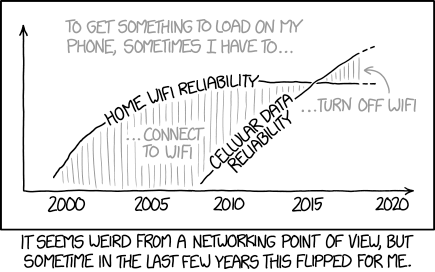
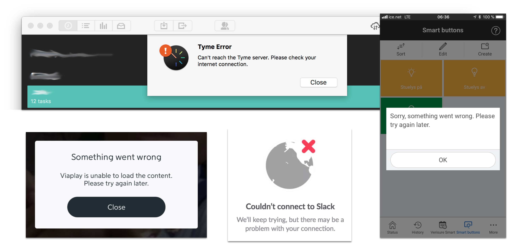
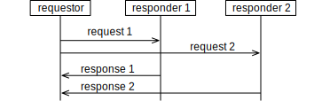
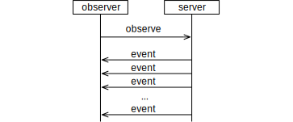
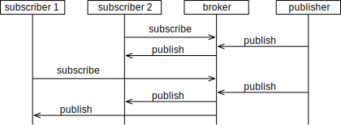
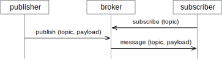
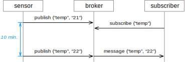
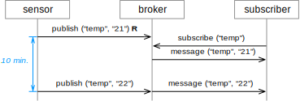
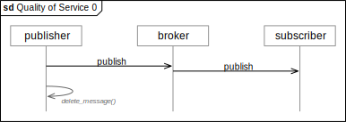
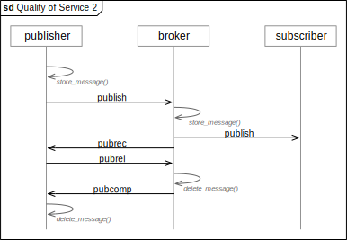

In this unit, we will have a look at communication at the level of an application. This means, we will learn how communication protocols influence our application logic. We will also study some of the details of specific protocols, in particular HTTP and MQTT.
Learning Goals
The learning goals specific for this week are the following:
Recognize and recite basic communication patterns and terminology.
Relate communication mechanisms to each other.
Select proper communication patterns and topologies for a given problem.
Reciting the basic mechanisms of HTTP and MQTT.
Designing an MQTT topic structure for a given system.
For the Semester Project
Communication Protocols
Communication protocols easily fill a course on their own, because there are so many of them and because they rely on a lot of mechanisms that are worth studying. You have probably already learned about protocols like TCP and HTTP. In the following, we will have a look at protocols from the viewpoint of an application. From this perspective, we are concerned with the entire system, the user requirements and also the development process to build that system.

Communication between components has a great influence on the system, its performance, its behavior, its robustness and its security, to name a few. Communication is probably most brittle part of our logic, since it depends on many factors that we don’t have control over. For instance, communication can always fail, either because the communication channel has errors, or our communication partner failed. Communication often takes a long time compared to local operations that we have more control over. We are never sure about the state of our system until we receive something back.
There are different strategies to integrate the challenges with communication into an application. In most cases, you will not implement all communication logic from scratch, but use a library, for instance to make an HTTP call or accept incoming UDP packages. This of course simplifies the implementation. Once a library for communication gets very advanced and introduces assumptions about your architecture, we also call them a framework or a middleware. There are communication frameworks that use more basic communication mechanisms, add logic on top of them and offer simpler application development. They take for instance care of some failure management and guarantee some system properties. They may also provide a uniform interface to several protocols, so that it is, for instance, possible to talk to other components no matter how they are connected. However, we still need to take into account that communication fails, may have to re-send messages, or tell the user that something is wrong. So even good middleware, libraries of framework don’t free you from the problems of communication; they may however, make life much easier.

Let’s have a look at three very different applications:
A wireless temperature sensor sends the temperature every ten minutes to a receiver that logs the temperature. The communication in between the two uses some wireless protocol, for instance Bluetooth or Zigbee. In this case, it may be appropriate to not do anything specific when the transmission fails. A failed transmission means one data point less, which may be acceptable. Of course, the user should see somehow if the communication works most of the time, for instance by showing how old the last measurement is and maybe blinking as a conformation when a new measurement was received.
An electronic body weight scale offers automatic logging to an iPhone app via Bluetooth. Here, each measurement is more valuable to the user, since they make this measurement less often and want to log it. However, also here the communication can fail, for instance when the phone is out of reach or Bluetooth is turned off. Like with the temperature sensor, communication could simply fail, possibly also notifying the user. A more advanced handling is to store the value that has not been transmitted and send it once the phone is in reach again next time.
A third example is a home automation system. Here it can be much more critical to handle communication properly, as for instance activating monitoring remotely. Existing systems often use several communication channels at the same time. By default, commands from a remote user can be sent from their mobile phone over the alarm company’s servers using the broadband connection of the house. The broadband connection is subject to failure. If the first sending fails, the app tries to send once again. At the same time, the command is put into a queue and the user can continue to use the app. If the sending fails once again, the app can switch communication modes an try to send the command as a coded SMS to the home gateway directly, since it also has its own mobile connection. Since, however, the user has to pay for this service, the app asks the user if the command should be sent this way.
All of these applications can be based on the same protocol, but on their application level they handle communication very differently. The temperature sensor offers no special logic, and just accepts communication to fail. The body weight scale offers some compensation that seems reasonable. The home automation system escalates the failure and involves the user to make decisions, simply because the command is important to transmit.
Basic Terms and Mechanisms
Communication protocols determine rules that lets two or more entities communicate with each other. They describe, for instance, how data is serialized, how data is encrypted, or how errors are handled. In the following, we look at communication by starting with the different message exchange patterns, and study the different topologies. But before that, let’s look at some basic terms and concept that make things easier to understand.
Communication happens between components, which are simply parts of the system. Depending on how many details of a system we know, or on which level of detail we want to describe it, a component can be different things. It can be an application, a web server, a web browser, or a device.
Roles during communication: A sender is the originator of some communication, and a receiver accepts the communication. In many forms of communication, a component can be both sender and receiver, and depending on the pattern there can be several senders or receivers. When we want to express who started (or initialed) a communication, we refer to that role as the initiator.
Components communicate via interfaces. These are simply some defined points in a system dedicated for exchanging information. Depending on which protocol of communication an interfaces uses, it can be described in different ways, and more or less formal or detailed. An interface description can tell other components for instance “You can connect to me using HTTP at port 80, with the following paths. I will return...” Interfaces are also often called APIs, which stands for application programming interface.
When communication happens, several mechanisms need to be in place and known to all communication partners:
Serialization means to transform some piece of data, like a number or a name or a record of more complex data, into a series of bits and bytes. This is necessary since we only can send zeroes and ones over a wire or through the air.
Cryptographic operations to the data means to sign the data, secure it against changes or encrypt it to prevent others from reading it.
Error handling includes to add checksums, so that corrupted data can be detected and to add sequence numbers to detect missing data or duplicate data. This also includes strategies for the communication partners for when errors are detected.
Most protocols describe the transmission of data in chunks of bytes. Depending on the protocol, these chunks are called packets, frames, messages or datagrams. All of them have some body, also called the payload, which contains the bytes to transmit. The body is enclosed by a header and a tail, which contain information to control the protocol mechanisms, like sequence numbers and checksums.
Communication Layers and Stacks
Protocols often rely on other protocols to do their job. For instance, HTTP uses TCP, which in turn uses the IP protocol. The protocols build a communication stack, which each protocol adding some new functionalities, also called services. For instance, IP offers connectivity between networks using IP packets. TCP uses this functionality and offers guaranteed delivery over the lossy IP channels using a sliding window mechanism. HTTP then uses TCP to handle requests that are ideal for websites, and was later also used for REST-ful APIs.
Communication Topologies
With topologies, we describe the patterns of the nodes and summarize some of their behavior. The following are the most important topologies:
Client-server: The client knows the address of the server. The server gets to know the client only after the client makes initial contact. Since only the client knows the address of the server initially, it is only the clients that can make the first contact and take initiative. In the world wide web, servers can host web sites and are contacted by browsers (the clients.) This is an example where there are many clients and only few servers, and where servers are optimized to server many clients. But there are also protocols in which the server is on a tiny sensor device, and “serves” the values of the sensor to any client that is interested in them.
Peer-to-peer: A peer is a node in a communication scenario. The word peer emphasizes that the nodes are equivalent, and each node can both send and receive messages, that means the communication is symmetric. This is in contrast to the client-server model, where the communication roles are very different (also called asymmetric). Peer-to-peer topologies are often used for applications where logic is distributed among several nodes, often without a central node for coordination. Examples are peer-to-peer networks for sharing data, or the protocol for the interactions used in blockchain protocols and currencies like Bitcoin.
Broker: A message broker is a server that distributes messages. The message broker usually does not care about the specific application or the content of the message. Clients communicate with the server and send messages to the broker, which then get distributed to those clients that are interested in the events.
Communication happens by sending messages. Communication patterns describe in which sequence and directions messages are sent to communicate. Many protocols use similar message exchange patterns.
Pattern: Single Message
The simplest pattern is a single message, sent from the sender to the receiver. The message can contain data or be empty.
Communication channels can be disturbed or disrupted, and messages can get lost.
Pattern: Request-Response
The requestor sends a message, and the responder sends a response message back to the requestor. The response can contain data or be empty. The answer message or response is also called acknowledgement. The entire request-response pattern is also called a handshake.
A typical example is when a browser requests an HTML document from a server. The request contains the address of the page and parameters. The response contains the HTML document.
When it is important that a message is received, the request-response pattern is often used instead of a single message. The reception of the response is a confirmation to the requestor that the request was received. In such cases, the request-response pattern is often combined with a timer on the requestor side. If the requestor does not receive a response within a given time, it sends the request again, until it receives the response.
In a synchronous communication, the sender and the receiver are directly connected, in the sense that the sender is not doing anything else while the communication is going on. A synchronous request-response, for instance, looks as follows:
In contrast, asynchronous communication means that the sender and the receiver are decoupled. The sender can do other things while waiting for a response, or it may not wait for a response at all.

Pattern: Observe
An observer can tell a server that it would like to get informed about events. Whenever the event happens, the server notifies the observer with a message.

Pattern: Publish-Subscribe
The publish-subscribe pattern is similar to the observe pattern, but involves three roles: a publisher, a message broker, and a subscriber. The broker sits in between the publisher and subscriber. It has the effect that publisher and subscriber do not have a direct connection with each other, each of them is only connected to the broker.

Pattern: Exclusive Pair
This is the most complicated and also most general pattern. Here the two communication partners have a specific sequence of messages to get a specific job done, which depends on a specific application. The two communication partners execute a longer negotiation or conversation.
Example: Application
A mobile route planner application is an example. To get the shortest route, a user first has to set the destination, the start and send it to the route planner on a server. The route planner can then offer alternatives, and the user selects among them, before the navigation can start. This requires an interaction of signals in a specific sequence, and the application and the server exchange information in that specific sequence. For the duration of the interaction, they engage in an exclusive pair interaction. Note, however, that the API in these examples is often structured so that this interaction decomposes into a series of request-response interactions coordinated by the application.
Example: TCP
TCP is a protocol to provide a connection over a lossy channel (like the internet). It handles that packages are lost, duplicated, or arrive in the wrong order. To an application using TCP, these mechanisms are invisible and it appears as if the connection simply works. TCP achieves this by the rules according to which it sends the different messages in both directions. So in this sense, two components talking TCP are an exclusive pair that together execute a specific protocol.
HTTP - Hypertext Transfer Protocol
This is only a very brief description of HTTP to relate it to the previously described communication topologies and message patterns. You have probably already heard about HTTP in other courses. Here, we look at it from an application’s perspective. If you are interested in more technical details, read for instance on Wikipedia.
HTTP is a request-response message pattern, and uses a client-server topology. The server usually provides resources to the client, which can be a web browser. In HTTP, the initiatives for communication are uni-directional. This means, the client takes initiative and contacts the server, not the other way round. For the original purpose of HTTP (requesting documents from a server) this is suitable characteristic, since it simplifies the construction of efficient servers and how documents can be cached.
Getting Bi-Directional
One websites should get more interactive, this is a limitation we are all aware of. We are used to refresh a website to see if there is new information available. And when booking a flight or paying via credit card, you see clumsy messages like “Don’t reload this page.” This is so inelegant because technology was never intended to this stuff with a browser! With this example you also see which fundamental effect communication topologies and message patterns have. Websites today are incredibly more advanced than ten years ago. Still, some of these old limitations are hard to get rid off.
There are some mechanisms that work around these limitations of HTTP. If you are interested in the details, have a look at the Wikipedia article on Comet. To keep it brief; it’s fascinating, but ugly. In essence, the workaround is that the client still initiates all communication, but client and server keep an HTTP connection alive, so that the server can send updates once there are some. When Google offered chat on their Gmail website, for instance, they used this mechanism to push new chat messages immediately from the server to the browser. Google Docs uses a similar mechanism.
To address the needs of server to notify the client when new information is available, the WebSocket protocol was built. Like HTTP, it also builds upon TCP, but offers full-duplex. With WebSockets, you can for instance build relatively simple web-applications running in the browser that support fine-grained, bi-directional interactions like chat or games.
MQTT
MQTT is a protocol that is based on the broker topology, and that implements a publish-subscribe message pattern. MQTT was invented in 1999 by Andy Stanford-Clark from IBM and Arlen Nipper from Arcom. Today, MQTT is an Oasis standard.
MQTT is often used in situations where events should be sent from many sensors and broadcast to several applications. IBM and others for instance use MQTT so that IoT devices can send updates into their cloud. When Facebook introduced their Messenger application as a standalone application, they also relied on MQTT to push messages to the clients. We consider MQTT in detail because this protocol is relatively easy to understand, introduces concepts that are used in various form also in other protocols, and because its patterns and topology is complementary to those of HTTP. When you have understood MQTT and HTTP, many other application-level protocols will be easy to understand, too. There are also some more practical reasons why we recommend you to use MQTT for the semester project:
MQTT is simple to debug, since more than one entity can subscribe to the same topic. This means, you can work on the communication between two entities, but observe all communication by subscribing to these topics with a debugging tool.
You only need to handle the IP address of the MQTT broker. All other addressing happens indirectly via topics.
Application startup is simple. You can startup the MQTT broker first, but clients can then connect in any order after that. The MQTT broker can also be hosted on a server and be always-on.
MQTT works also behind a NAT, in both directions. This means you can push a message from any location to a computer that is connected to your router at home.
Roles
There are three roles in MQTT. The Publisher sends messages to the Broker, which then forwards them to a set of interested Subscribers.
A typical interaction looks as follows:

There can be any number of subscribers and any number of publishers in a system. Because of the publish-subscribe pattern, the subscribers do not have to know about the publishers, and the publishers do not have to know of the subscribers. They only have to know the address of the MQTT broker and connect to it.
The brokers only implement generic functionality, this means, they do not depend on the specific application. Therefore, the broker is a component in a system that can be reused. There are several MQTT brokers available. Examples are Mosquitto, RSMB, HiveMQ.
Topics
Usually, subscribers are not interested in all messages that all publishers send. Subscribers therefore only subscribe to specific topics, which depend on the application. The topics are organized in a hierarchy, separated by a dash (“/”). The following is an example for topics that an application for home automation can use:
The light l1 for instance subscribes to the topic house/garage/lights/l1 so that it can receive messages that switch it on or off. The passive infrared sensor pi1 publishes messages to the topic house/garage/sensors/pi1 every time it detects a movement. An application to switch on the lights whenever a movement is detected can then work like this: (In pseudo code)
subscribe to house/garage/sensors/pi1
whenever an MQTT messages arrives at house/garage/sensors/pi1:
send a message
to house/garage/lights/l1 with payload "on"@
after some time, send a message
to house/garage/lights/l1 with payload "off"
Topics can include wildcards, which make it possible for a subscriber to subscribe to several topics with a single pattern:
The “+” is used as a wildcard for a single level
The “#” is used as a wildcard for several levels. It must only be placed at the end of a topic pattern.
Examples:
To receive all messages sent within the house, a subscriber can subscribe to house/#
To receive all messages for lights in any zone (garage or kitchen), a subscriber can subscribe to house/+/lights/+
Exercise:
A publisher sends a message to the topic a/b/c/d. Which of the following 15 subscription topics will receive this message?
Subscription Topic
1
#
2
+/+/+
3
+/+/+/+
4
+/b/c/#
5
+/b/c/d
6
a/#
7
a/+/+/d
8
a/+/c/d
9
a/b/#
10
a/b/c
11
a/b/c/#
12
a/b/c/d/#
13
a/b/c/d
14
b/+/c/d
15
a/b/c/d/+
Retained Messages
Imagine a temperature sensor that sends the temperature every 10 minutes. This is a sensible intervall, since temperature does not change too quickly, and the sensor should preserve its battery. When we start an application that needs the temperature in a room, it would have to wait until the sensor sends its temperature, which can be as long as about 10 minutes in the worst case.

Instead, the sensor can mark its temperature message as a retained message. The broker will then store a copy of this message until it is replaced with a new message sent to the same topic. Whenever a new subscriber subscribes to the topic, it will immediately receive the retained message from the broker. In our example this means that the application does not have to wait until the sensor wakes up and sends again, but that it immediately receives the last temperature reading. (We show the reainted message with a trailing R.)

Last Wills
The MQTT broker monitors the connection to all clients, and detects once they do not respond anymore. Any subscriber, however, by default does not get notified once another client disappears. For instance, our temperature application would not be able to detect immediately once a temperature sensor disconnects. (It would only indirectly, because there would be no temperature readings anymore.)
Instead, a client can define a “last will” with the broker at the connection startup. This last will defines a message payload and a topic to which the message will be sent if the broker detects that the client suddenly disconnects. Any interested subscribers can then get notified about the sudden disconnection. If the client, however, disconnects properly from the broker, the last will message is not sent.
Quality of Service
Messages can be sent with three different quality-of-service (QoS) flags, which determine how much effort the broker and the clients spend on sending them:
QoS=0 is also called At most once. The message can get lost, and there will be no attempts to resend it.
QoS=1 is also called At least once. This means that the message will be eventually received, but that several copies of the message may appear due to duplication. The receiver has to detect any such duplicates.
QoS=2 is also called Exactly once. This guarantees the delivery and avoids any duplication.
You may immediately ask: If QoS=2 is available, why would one ever use any of the lower QoS levels? The answer is that the highest quality of service is also more expensive with regards to transmission effort. To send a single QoS=2 message, several messages on the underlying channel are necessary. Therefore, an application should always choose the lowest QoS level it can work with. Below you see three diagrams that show how many control packages are involved to just send a single MQTT message with the different QoS levels. (The grey message arrows that start end end at the same lifeline illustrate only local operations, not communication.)


Sequence Diagrams on Many Levels
Maybe you wondered how some of the sequence diagrams we have seen on the last pages relate to those that you develop for a specific application. Assume the application uses MQTT. What should you show then in a sequence diagram? The answer: It depends on what you want to show.
The diagrams Quality of Service X above show how MQTT is implemented internally and passes messages in order to publish one single message. These diagrams are only interesting when you need to understand if the MQTT protocol is suitable for your purposes, or you are concerned which QoS level to use. You will probably not use this level of detail for an application-level diagram.
The diagram above that shows MQTT using a retained message above is already closer to the application level, since publish, subscribe and message are shown as single, compact messages.
In some cases, it is probably interesting to show an MQTT broker as part of the sequence diagram. After all, it is a critical component in the system that requires consideration. But it may not be necessary to contain the broker in the diagrams of all use cases. Instead, the lifelines representing individual MQTT clients can directly send messages to each other, so that the application logic gets easier visible.